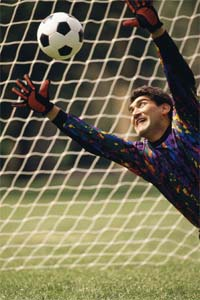

If you are interested in Italian soccer and would like to find out more about the League teams, visita www.lega-calcio.it or http://it.sports.yahoo.com
If you have problems accessing this site, do a general search on www.yahoo.it. Select calcio to begin your search.
To find out information about La Nazionale and the latest novità and video footage, go to www.aleefranz.com/nazionale.
If you have problems accessing this site, do a general search on www.yahoo.it. Select La nazionale to begin your search
If you have pay TV, you may be able to access Italian soccer matches. SBS also features some international and European soccer competitions. You can also watch Italian calcio on the Internet. Visita http://it.sports.yahoo.com/videos/calcio.html
Gol! Gol! Gol!
Forza Italia!
